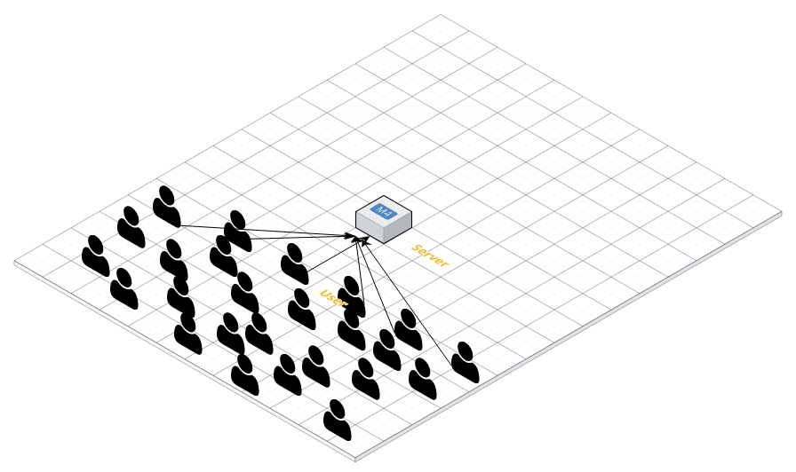
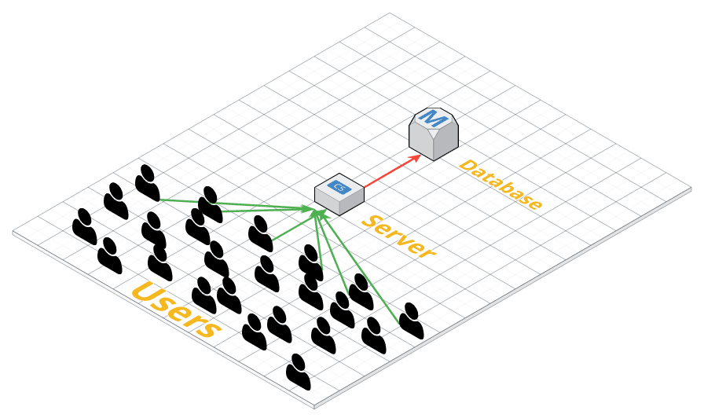
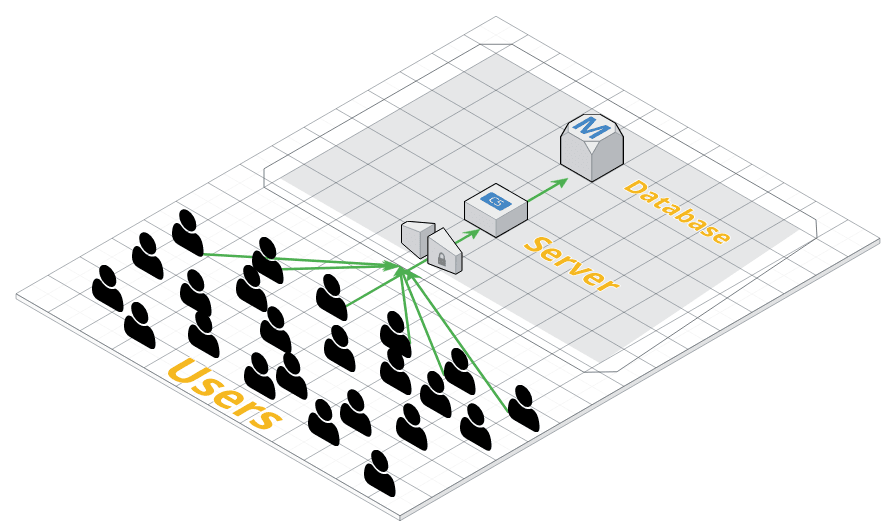
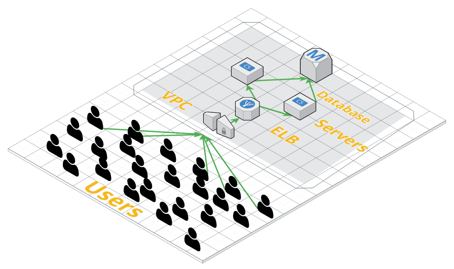
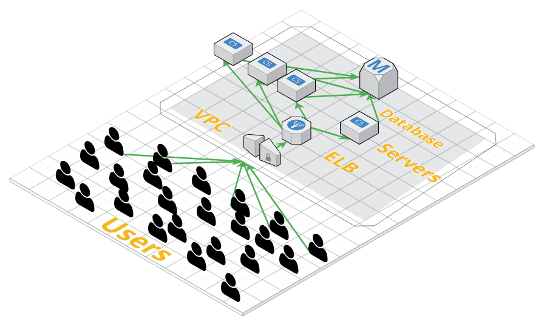

class: center, middle # Intro to Amazon Web Services --- ### A Brief History of Amazon Web Services *AWS was born out of a startup struggling to stay on top of massive demand.* * In the early 2000s, Amazon was building infrastructure and tools to support Amazon.com. * In 2006, Amazon brought their tools and infrastructure public with EC2. * They were the first company to make a public cloud offering. * Currently AWS control 35% of the cloud market. * AWS offers 98 different products. -- ### [70% of Internet Traffic Goes Through AWS Northern Virginia](http://www.nextgov.com/analytics-data/2016/01/70-percent-global-internet-traffic-goes-through-northern-virginia/124976/) ... --- ## AWS Acronyms **EC2** These are virtualized Linux, Windows, and Mac comupters that you rent from Amazon. * Amazon gives you an IP address and SSH access to the computer. **S3** Cloud storage. Imagine a virtual, cloud file system. * Amazon gives you a access to a RESTful API that is used to store pretty much anything you want. **RDS** Database. High availability databases in any flavor you like (MySQL, Postgres, Oracle, MariaDB). * Amazon gives you either an internally facing or externally facing IP address to connect to. --- ## Why AWS? You have options: -- * AWS -- * Google Cloud -- * Microsoft Azure -- * DigitalOcean -- * Linode -- * hundreds more -- ### People choose because it is the **complete tool** for **highly available** systems. --- ## AWS High Availability AWS has an uptime of **99.95%**. ### **99.95%** uptime is about **4 hours** of downtime a year. -- *4 hours of downtime is not good enough for most companies*. --- ## AWS Redundancy Reducing the the points of failure by creating failover backup systems. -- * You can achieve even higher uptime by distributing your systems across "Availability Zones." -- * Amazon has 52 Availability Zones across the globe. Each "AZ" is independently powered and cooled. Each has its own networking and security. -- * AWS does most of this behind the scenes! --- ## AWS: **Complete** Toolset AWS gives you everything that you would normally have in a data center and more: * Easy to configure system access and security (**IAM**) * Fine grained network security (**VPC**) * Auto scaling servers (**Elastic Beanstalk**) * Remote permanent storage (**S3**) -- ### AWS makes it "easy" to build out a resilient cloud application. *(it's a lot of work to build out these tools on your own)* --- ## **AWS** by Example * How does AWS make things easy for the developer? * How does AWS help your systems scale? --- ## **AWS** by Example Single Server Application <img src="images/simple_single_server.png"></img> --- ## **AWS** by Example EC2 Server Simply Overwhelmed </img> --- ## **AWS** by Example ### Single Server Situation As traffic increases, having one server causes problems: * Eventually the server reaches peak utilization and has to be upgraded. * Since the one server is running both the web application and the database (and perhaps more) a performance problem on one system brings down everything. * The single server is a point of failure. If that server goes down, the applciation and all of the data goes with it! --- ## **AWS** by Example ### The **Solution** **RDS** Database * An **RDS** database is simply an specialized EC2 instance that has Postgres, MySQL, Oracle, or MariaDB installed. * **RDS** databases have a few extra perks. * An **RDS** database has **high availability**. This means that behind the scenes AWS automatically creates multiple copies of your database in different data centers. If one data center goes down, your database is still up. --- ## **AWS** by Example Server with a separate Database **Warning!** The communication between the web application and the database is not encrypted! </img> --- ## **AWS** by Example ### Cloud Security * Traditional data centers protect data with physical security and firewalls. * In the cloud, **EVERYTHING** is potentially open to the public. -- ###Solution * VPN networks can encrypt data moving across a group of computers. *OR* * AWS offers a **VPC** Virtual Private Cloud that acts as a data center around your cloud infrastructure. --- ## **AWS** by Example ### Virtual Private Clouds * **VPC**s are logically separated from all other virtual networks on AWS. * **VPC**s create a virtual network on the cloud that is invisible to the rest of the internet. * Since the network is invisibile to the outside world, the data is generally* safe to travel unencryped between devices. --- ## **AWS** by Example EC2 Server with a database in a VPC </img> --- ## **AWS** by Example As the app traffic increases, the load on the server increases. The increased load can cause system failures resulting in downtime. ### Solution Elastic Load Balancers * ELBs distribute traffic across multiple servers. * ELBs are smart. They continuously check on their servers. If a server goes down, it reroutes traffic to other servers in the group. * ELBs are also **High Availability**. Essentially, they will almost never go down. --- ## **AWS** by Example **EC2** Server behind an **ELB** using an **RDS** database within a **VPC** </img> --- ## **AWS** by Example Keep scaling as many **EC2** instances as you need! </img> --- ## **Troubleshooting** TCP Connections If you want to keep your sanity while setting up your VPC, you need to know how to **troubleshoot** TCP connections. -- TCP Connections in one of the following states: 1. Connected 🙌 2. Connection Refused 😐 3. Connection Timeout 😥 -- Each message is a hint as to what is wrong! --- ## **Troubleshooting** TCP Connections ### Telnet **Telnet** is a tool that allows you to communicate with other computers over TCP. -- * Telnet can also be used to check the status of TCP connections: ``` $ telnet {ip address} {port} ``` --- ## **Troubleshooting** TCP Connections ### Connected 🙌 ``` $ telnet localhost 8000 Trying 127.0.0.1... Connected to localhost. Escape character is '^]'. ``` * The port is open. * The server is running and properly accepting responses. --- ## **Troubleshooting** TCP Connections ### Connection Refused 😐 ``` $ telnet 159.89.182.183 9001 Trying 159.89.182.183... telnet: connect to address 159.89.182.183: Connection refused telnet: Unable to connect to remote host ``` * The port is open. * There is nothing running on the port to accept the incoming connection. --- ## **Troubleshooting** TCP Connections ### Connection Timeout 😥 ``` $ telnet 159.89.182.183 9002 Trying 159.89.182.183... ``` * The port is not open. * A server may running, but the connection is being blocked. * Check the firewall to see if traffic is allowed. --- --- ## A Word about **Ports** Ports accept TCP connections for your computer. * All TCP connections that come into your computer arrive on a **Port**. * There are 65,535 ports on your computer. -- The 65,535 ports on your computer are in three groups: 1. **Well Known Ports** (0-1023) - Specifically allocated by IANA. Example - 22 is SSH, 25 - SMTP, 80 - HTTP, 443 - HTTPS. 2. **Registered Ports** (1024-49151) - There can be registered with IANA. Considered "Semi Reserved." 3. **Ephemeral Ports** (49152-65535) - Programs are free to use these ports any time they want. --- ## A Word about **Ports** ### How it works * Known Ports - Certain programs are known to run a specific port so - there can never be another process using that port. * Ports are used to listen for connections. * When the incoming connection comes in, the computer moves their conversation to an ephemeral port so that the it can continue listening on original port. --- ## Port Example * You ssh into a server at port 22. * The server accepts your connection and says "Hey want to chat on port 61,928?" * Your computer says "Sure!". Both computers talk over port 61,928. ### It's important to remember to open the ephemeral ports when configuring a firewall### ---